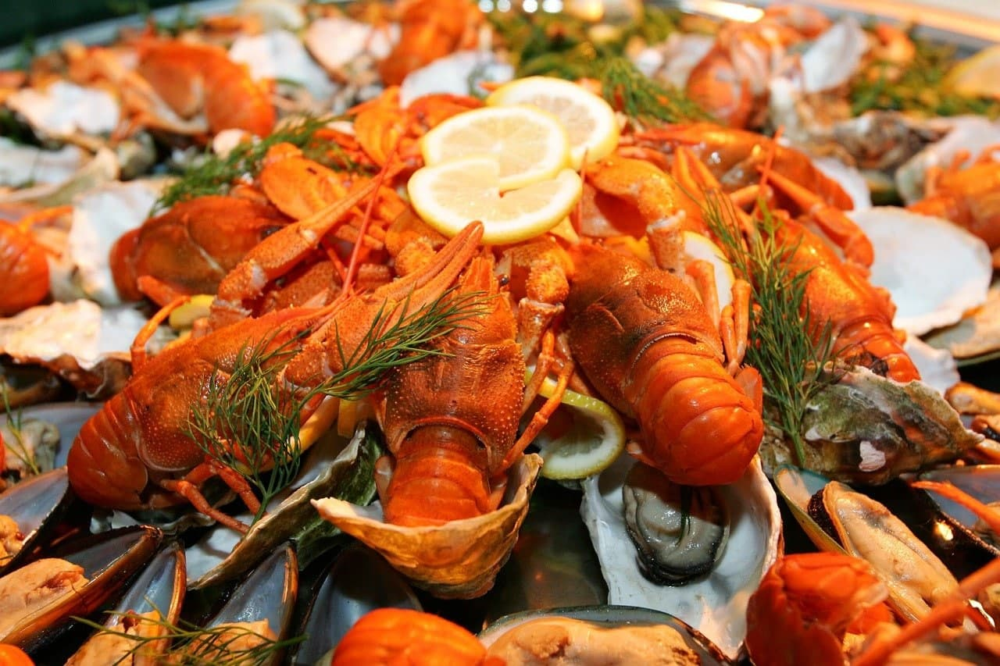
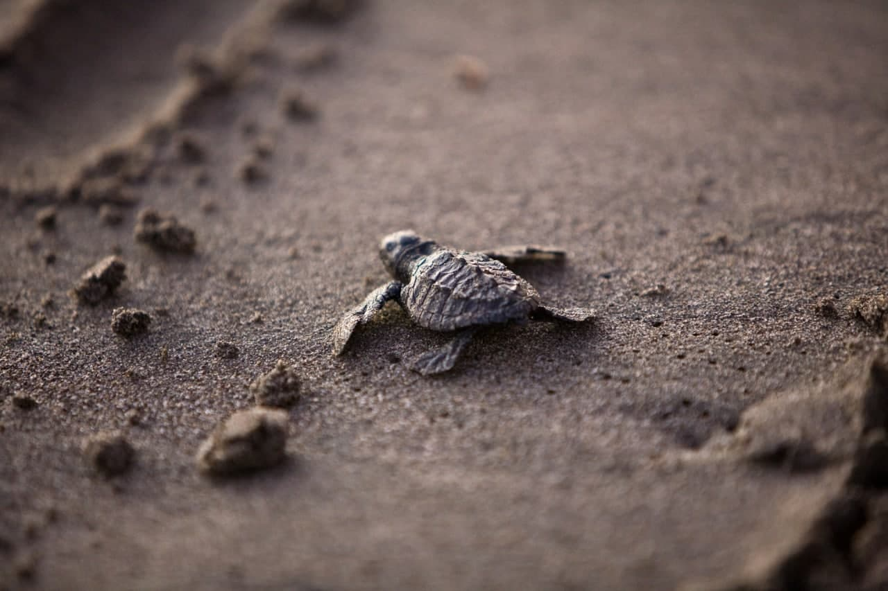
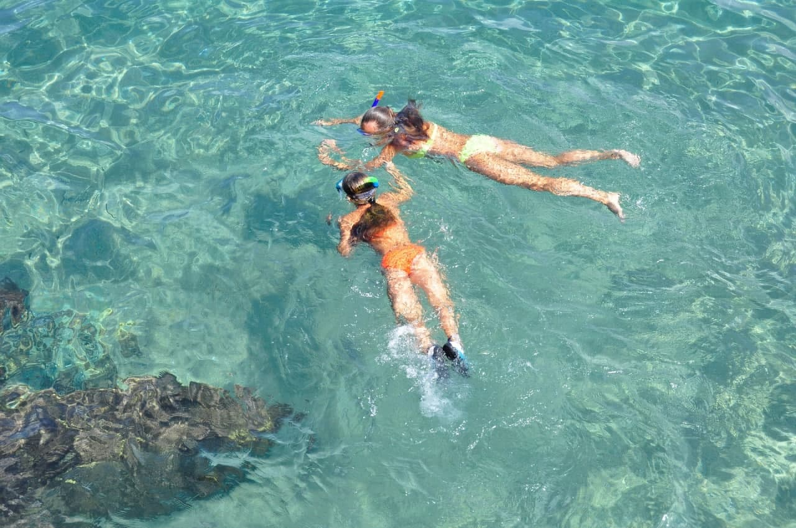

Pulau Perhentian- Syurga untuk menyelam
Keindahan hidupan marin di sini juga setanding dengan yang ada di Pulau Redang dan juga merupakan destinasi wajib bagi setiap penyelam yang bercuti di pulau di Terengganu. Anda boleh ke Jeti Kuala Besut untuk menaiki bot untuk ke Pulau Perhentian.
Keindahan Pulau Perhentian masih lagi terjaga dan bahkan kalau nak bersiar-siar di sini, hanya dengan menggunakan denai jalan kaki atau pun teksi bot. Di sini tidak mempunyai jalan raya seperti yang ada di Pulau Tioman atau Pulau Langkawi. Jungle trekking di sini juga agak menarik dan anda boleh melihat beberapa hidupan liar yang ada seperti biawak monitor, kelawar buah, tupai dan pelanduk. Aktiviti utama pelancong di sini sudah tentulah snorkeling dan scuba diving.
Pulau Perhentian juga antara pulau di Malaysia yang sering menjadi destinasi percutian backpacker dari dalam dan luar negara kerana di sini mempunyai banyak pilihan chalet bajet. Bagi yang inginkan keselesaan & percutian yang lebih eksklusif, di sini juga terdapat resort-resort yang mewah yang terbina di pesisiran pantai di Pulau Perhentian.
Peta ke Pulau Perhentian



Pulau Perhentian yang kaya dengan makanan laut yang segar dan aktiviti yang menarik yang boleh dinikmati oleh para pelancong.